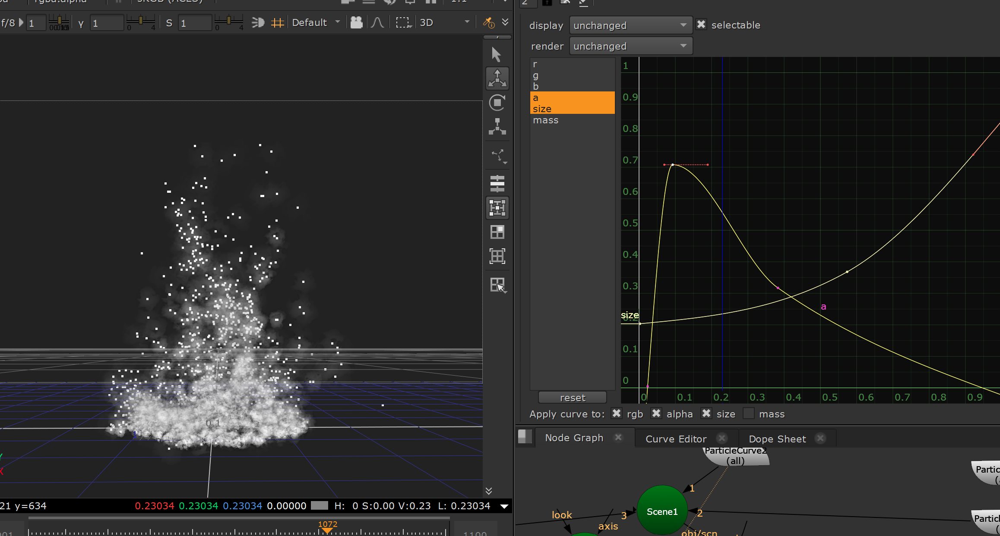
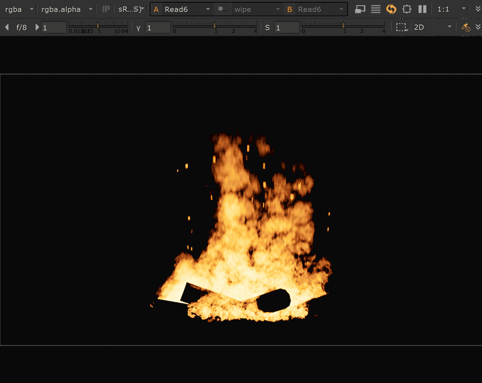

Demo
Overview
This project started as a personal R&D study after experimenting with Houdini pyro.
I wanted to see how far Nuke’s native Particle system could be pushed to create a fire element directly inside comp, without relying on an external simulation cache.
Technical Breakdown
The fire was built using native Nuke particle nodes.
A noise-based texture was used as the particle sprite source, while Directional Force and Turbulence controlled the upward flame motion.
Particle Curve was used to shape the lifetime behavior, allowing particles to grow, fade, and lose opacity toward the top of the flame.
The rendered particle pass was then treated in comp with grading and vector blur to push the result closer to a flame.

Noise-based sprite texture used as the particle source.

Directional Force pushes the particle volume upward to establish the main flame motion.

Particle Curve controls opacity and scale over particle lifetime, softening the flame tip.

Final particle render preview inside the Nuke viewer